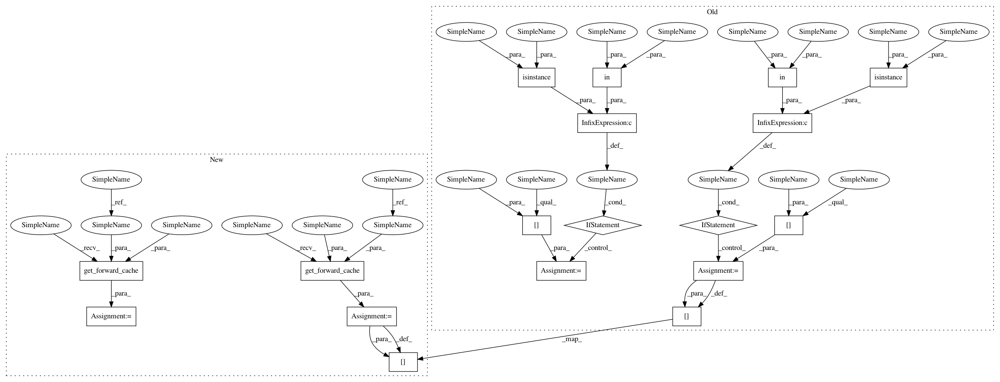

d0df30627550710563e730586bdaf5908a3680ab,chaospy/distributions/operators/power.py,Pow,_bnd,#Pow#Any#Any#Any#Any#,21
Before Change
[[8. 8. 8. 8.]
[8. 8. 8. 8.]]
if isinstance(left, Dist) and left in cache:
left = cache[left]
if isinstance(right, Dist) and right in cache:
right = cache[right]
if isinstance(left, Dist):
if isinstance(right, Dist):
raise StochasticallyDependentError(
"under-defined distribution {} or {}".format(left, right))
elif not isinstance(right, Dist):
return left**right, left**right
else:
output = numpy.ones(xloc.shape)
left = left * output
assert numpy.all(left >= 0), "root of negative number"
indices = xloc > 0
output[indices] = numpy.log(xloc[indices])
output[~indices] = -numpy.inf
indices = left != 1
output[indices] /= numpy.log(left[indices])
output = evaluation.evaluate_bound(right, output, cache=cache)
output = left**output
output[:] = (
numpy.where(output[0] < output[1], output[0], output[1]),
numpy.where(output[0] < output[1], output[1], output[0]),
)
return output
output = numpy.zeros(xloc.shape)
right = right + output
indices = right > 0
output[indices] = numpy.abs(xloc[indices])**(1/right[indices])
output[indices] *= numpy.sign(xloc[indices])
output[right == 0] = 1
output[(xloc == 0) & (right < 0)] = numpy.inf
After Change
[[8. 8. 8. 8.]
[8. 8. 8. 8.]]
left = evaluation.get_forward_cache(left, cache)
right = evaluation.get_forward_cache(right, cache)
if isinstance(left, Dist):
if isinstance(right, Dist):
raise StochasticallyDependentError(
"under-defined distribution {} or {}".format(left, right))
elif not isinstance(right, Dist):
return left**right, left**right
else:
output = numpy.ones(xloc.shape)
left = left * output
assert numpy.all(left >= 0), "root of negative number"
indices = xloc > 0
output[indices] = numpy.log(xloc[indices])
output[~indices] = -numpy.inf
indices = left != 1
output[indices] /= numpy.log(left[indices])
output = evaluation.evaluate_bound(right, output, cache=cache)
output = left**output
output[:] = (
numpy.where(output[0] < output[1], output[0], output[1]),
numpy.where(output[0] < output[1], output[1], output[0]),
)
return output
output = numpy.zeros(xloc.shape)
right = right + output
indices = right > 0
output[indices] = numpy.abs(xloc[indices])**(1/right[indices])
output[indices] *= numpy.sign(xloc[indices])
output[right == 0] = 1
output[(xloc == 0) & (right < 0)] = numpy.inf
In pattern: SUPERPATTERN
Frequency: 3
Non-data size: 18
Instances
Project Name: jonathf/chaospy
Commit Name: d0df30627550710563e730586bdaf5908a3680ab
Time: 2019-02-17
Author: jonathf@gmail.com
File Name: chaospy/distributions/operators/power.py
Class Name: Pow
Method Name: _bnd
Project Name: jonathf/chaospy
Commit Name: 21721a484a979a3b6ed2f17a31301ee8ffd85d95
Time: 2018-12-15
Author: jonathf@gmail.com
File Name: src/chaospy/distributions/operators/multiply.py
Class Name: Mul
Method Name: _pdf
Project Name: jonathf/chaospy
Commit Name: 21721a484a979a3b6ed2f17a31301ee8ffd85d95
Time: 2018-12-15
Author: jonathf@gmail.com
File Name: src/chaospy/distributions/operators/multiply.py
Class Name: Mul
Method Name: _cdf
Project Name: jonathf/chaospy
Commit Name: d0df30627550710563e730586bdaf5908a3680ab
Time: 2019-02-17
Author: jonathf@gmail.com
File Name: chaospy/distributions/operators/power.py
Class Name: Pow
Method Name: _bnd